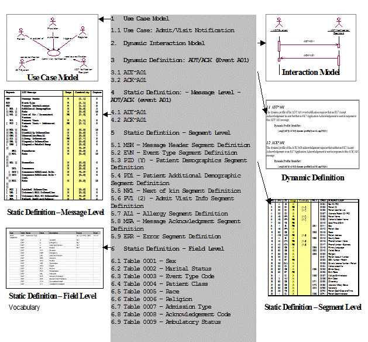
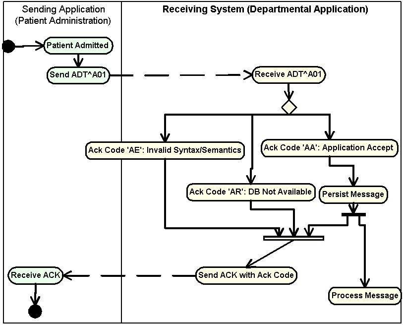
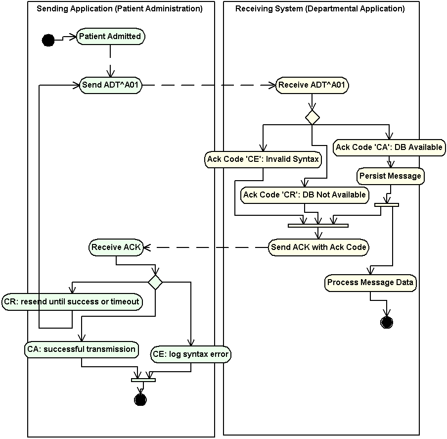
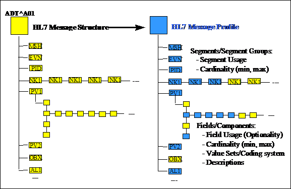

|
2. Control (continued) |
|
|
Previous sections in this chapter define the rules and conventions for constructing and communicating a message including the parts of a message structure. Messages that adhere to those rules of a specific version of a standard are compliant to that version of the standard.
Compliance to the HL7 Standard has historically been impossible to define and measure in a meaningful way. To compensate for this shortcoming, vendors and sites have used various methods of specifying boundary conditions such as optionality and cardinality. Frequently, specifications have given little guidance beyond the often-indefinite constraints provided in the HL7 Standard.
This section presents the methodology for producing a precise and unambiguous specification called a message profile. Messages that adhere to the constraints of a message profile are said to be conformant to the profile. For conformance to be measurable, the message profile must specify the following types of information:
What data will be passed in a message.
The format in which the data will be passed.
The acknowledgement responsibilities of the sender and receiver.
A conformance statement is a claim that the behavior of an application or application module agrees with the constraints stated in one or more message profiles. This section defines the message profile; however, the conformance statement will not be discussed further in this document.
Definition: An HL7 message profile is an unambiguous specification of one or more standard HL7 messages that have been analyzed for a particular use case. It prescribes a set of precise constraints upon one or more standard HL7 messages.
An HL7 message profile is compliant, in all aspects, with the HL7 defined message(s) used in the profile. It may specify constraints on the standard HL7 message definition.
A message profile fully describes a conversation between two or more systems through the combination of the following:
one use case analysis,
one or more dynamic definitions,
one or more static definitions, and
one table (vocabulary) definition.
The use case analysis may be documented as a use case diagram (supported with text) or just a textual description (See section 2.B.2, "Use case model".)
The dynamic definition is an interaction specification for a conversation between 2 or more systems (See Section.2.B.3, "Dynamic definition".)
The static definition is an exhaustive specification for a single message structure (see Section 2.B.4, "Static definition"). Normatively expressed as an XML document validated against the normative message profile Schema, it may be registered on the HL7 web site (see Section 2.B.10, "Message profile document").
The table (vocabulary)definition is an exhaustive specification for a single message structure (see Section 2.B.5, "Table definition"). Normatively expressed as an XML document validated against the normative message profile Schema, it may be registered on the HL7 web site (see Section 2.B.10, "Message profile document").
For detailed background information regarding message profiles, the reader is referred to the Conformance SIG balloted informative document, "Message Profiling Specification, Version 2.2", published November 30, 2000, upon which this section is based. This document is available from the HL7 Conformance SIG Web site (http://www.hl7.org).
A sample message profile is shown on the next page to assist in illustrating the constituents of a message profile and how they work together.
Message Profile Example

Definition: An HL7 message profile is an unambiguous specification of one or more standard HL7 messages that have been analyzed for a particular use case. Each message profile may have a unique identifier as well as publish/subscribe topics.
Each message profile may have a unique identifier to facilitate reference.
The message profile publish/subscribe topics is not required to be unique but might be used by publish/subscribe systems to convey aspects of the message profile (see MSH-21 Message Profile Identifier in the opening section of chapter 2).
The topics are not a normative constituent of the message profile but, if provided as part of the metadata, should be in the format described below. The topic elements will be separated by the dash (-). Any element that does not have a value should use null. As this information may be used in a message instance; it should not contain any HL7 message delimiters.
Message Profile Publish/Subscribe Topics Elements
| Seq | Topic Element Name | Value |
|---|---|---|
| 1 | Conformance SIG ID | confsig |
| 2 | An organization identifier | Abbreviated version of the organization name |
| 3 | The HL7 version | Refer to HL7 Table 0104 - Version ID for valid values |
| 4 | Topic Type | profile |
| 5 | Accept Acknowledgement | The accept acknowledgement responsibilities.(refer to HL7 Table 0155 - Accept/application acknowledgment conditions for valid values) |
| 6 | Application Acknowledgement | The application acknowledgement responsibilities (refer to HL7 Table 0155 - Accept/application acknowledgment conditions for valid values) |
| 7 | Acknowledgement Mode | Deferred or Immediate |
An example of message profile publish/subscribe topics:
confSig-MyOrganization-2.4-profile-AL-NE-Immediate
Definition: A use case model documents the scope and requirements for an HL7 message profile or set of message profiles.
The use case model must:
Provide a name that clearly and concisely defines the exchange
Document the purpose for each message exchange
Define the actors, including the sending and receiving applications
Define the flow of events between these actors including, where appropriate, derived events
Document the situations in which the exchange of a particular HL7 message profile is required
Refer to the HL7 V3.0 Message Development Framework (MDF 99) for further information on use case models and their uses within HL7.
Definition: The dynamic definition is an interaction specification for a conversation between 2 or more systems. It may reference one to many static definitions. The dynamic definition may include an interaction model in addition to the acknowledgement responsibilities.
Definition: The Interaction Model illustrates the sequence of trigger events and resulting message flows between 2 or more systems. It may be in literal or graphical form. Graphical form should be a UML activity diagram. Example activity diagrams are shown here for the original and enhanced acknowledgement modes.
Interaction Model Example - ADT^A01/ACK^A01 (Original Acknowledgement Mode)

Interaction Model Example - ADT^A01/ACK^A01 (Enhanced Acknowledgement Mode)

The specific HL7 acknowledgements required and/or allowed for use with the specified static definition of the HL7 message profile shall be defined. Specifically, the dynamic definition shall identify whether an accept and/or application level acknowledgement is allowed or required.
For any one static definition there may be one or more dynamic definition.
The dynamic definition shall define the conditions under which an accept and/or application level acknowledgement is expected.
Allowed conditions include:
Always
Never
Only on success
Only on error.
Definition: The static definition is an exhaustive specification for a single message. Normatively expressed in XML, it may be registered on the HL7 web site (See Section 2.B.10, "Message profile document"). The static definition is based on a message structure defined in the HL7 Standard. The message code, trigger event, event description, role (Sender or Receiver) and, if applicable, the order control code will be provided. A complete static definition shall be defined at the message, segment, and field levels. A static definition is compliant in all aspects with the HL7-defined message it profiles. However, the static definition may define additional constraints on the standard HL7 message.
A static definition identifies only those specific elements of a standard HL7 message that are used in the exchange.
A static definition explicitly defines:
Segments, segment groups, fields and components usage rules
Cardinalities
Value sets and coding systems.
The following figure depicts, in a graphical way, the concept that the static definition is an overlay of the HL7 message structure further constraining it. For example, where the HL7 message structure shows unlimited number of NK1 Segments, the static definition allows for only three repetitions. Additionally, fields that are optional in the HL7 message structure may be required within the HL7 static definitions.
Static Definition Illustration

Each static definition must have a unique identifier when registered (See section 2.B.10, "Message profile document"). An authority other than the registry may define this identifier. If, at the time of registration, the static profile does not have an identifier assigned by the submitter's authority, the registry authority will assign one. The static definition identifier would be the identifier used if a system asserts a strict conformance claim (see MSH-21 Message Profile Identifier in the first section of chapter 2).
Static definition publish/subscribe topics convey the static definition aspects of the message profile. These topics may be used by publish/subscribe systems (see MSH-21 Message Profile Identifier in the first section of chapter 2).
The topics are not a normative constituent of the message profile but, if provided as part of the metadata (see section 2.B.10, "Message profile document"), should be in the format described below. The topic elements will be separated by the dash (-). Any element that does not have a value should be null (nothing between the dashes). As this information may be used in a message instance, it should not contain any HL7 message delimiters.
Static Definition Publish/Subscribe Topics Components
| Seq | Topic element name | Value(s) |
|---|---|---|
| 1 | Conformance SIG ID | confsig |
| 2 | An organization identifier | Abbreviated version of the organization name |
| 3 | The HL7 version | Refer to HL7 Table 0104 - Version ID for valid values |
| 4 | Topic Type | static |
| 5 | Message Type Code | Refer to HL7 Table 0076 - Message type for valid values |
| 6 | Event Type | Refer to HL7 Table 0003 - Event type for valid values (this table may be extended by locally defined Z trigger events) |
| 7 | Order Control Code | Refer to HL7 Table 0119 - Order Control Codes for valid values |
| 8 | Structure Type | Refer to HL7 Table 0354 - Message structure for valid values (this table may extended by locally defined message structures) |
| 9 | Specification Version | Version number of the application, interface, or specification |
| 10 | Specification Status | Status of the application, interface, or specification |
| 11 | Role | Sender or Receiver |
An example of static definition publish/subscribe topics:
confsig-MyOrganization-2.4-static-ADT-A04--ADT_A01-v2-draft-Sender
Table definitions will include statements of table conformance and, if available, the actual table elements supported.
Statements of table conformance will consist of the definition of the table and its constituent elements. To the maximum extent practical it should be possible to objectively validate the content of a given message instance against the table definition in the profile.
The table definition can specify tables supported and the usage of values in those tables. The source of the tables will be HL7, User, Local, External, or Imported. For each table, the identifier, description and code system will be supplied. The table identifier and version may also be supplied.
For each element identified in the table, the code, display name, source, and usage (Refer to 2.B.7.2, "Usage") will be supplied. The source of the individual element will be HL7, User, Redefined, or SDO.
There are three basic profile types used in documenting standard conformance:
HL7 Standard profile (represents a specific HL7 published standard, creation and publication limited to HL7 use),
constrainable profile (with "Optional" elements which must be further constrained in order to create implementation profiles), and
implementation profile (no "Optional" parts, fully implementable).
This model allows vendors or providers to publish generic profiles from which fully constrained implementation profiles can be created.
In comparison with the HL7 standard, separate constrainable and implementation profiles may exist for the receiving and the sending role.
Both constrainable profiles and implementation profiles focus primarily on the expectations of the sending application, with minimal constraints on the application behavior of the receiver.
Due to the HL7 principle of not specifying application behavior, this message profile section will not address use cases where explicit constraints on the expected behavior of the receiver application (e.g., whether the receiver must process information, ignore it or generate an error) are required.
A vendor might develop a message profile to which all their software products must comply but, in itself, is not an implementation profile. The different products serve potentially different domains and might be implemented with products from other vendors. The vendor profile constrains the HL7 Standard by defining agreed-to vocabularies, conditionality rules, supported items, and local extensions that are shared across all products. The profile is not necessarily fully constrained. For example, the vendor profile might allow the usage code of optional as, across different products, an element may be required in some use cases, be optional or conditional in others, and not be supported at all in still others. The vendor's individual software products might themselves have profiles that would build on, and further constrain, their vendor profile. The product profile would specifically define the information model and the elements contained within. The product profile might still be a constrainable profile as elements might result in different HL7 messages based on configuration settings and customizations. Only once all configuration settings and customizations have been taken into account can you have a fully-constrained 'Implementation' profile.
Constrainable profiles can be useful for interface engine applications which must be flexible enough to allow for receipt of messages based on a variety of message profiles. The desire of the application would be to validate message instances against one constrainable profile.
Realms, national and regional, profiles represent localization and restrictions placed on the appropriate standard, while providing enough optionality for basing the more specific implementation profiles. Some examples of realm constrainable profiles are:
AS4700.1-2001 Implementation of HL7 v2.3.1 Part 1:Patient Administration (constrainable profile for Australian Standards, constrains HL7 2.3.1, Chapter 3).
AS/NZS 4700.3-1999 Implementation of HL7 v2.3 Part 3: Electronic messages for exchange of information on Drug Prescription (constrainable profile for Australian Standards, constrains HL7 2.3, various Chapters).
Implementation profiles represent the lowest level of specification required for unambiguous implementation. Examples of some implementation profiles are:
Adverse Drug Reaction Implementers Specification, 2001, TGA (implementation profile, constrains Australian Standards and HL7 v2.3.1 constrainable profiles for Therapeutic Goods Administration ADRAC Messaging Implementation Project),
Diabetes Reporting Implementers Specification, 2001, UNSW (implementation profile, constrains Australian Standards and HL7 v2.3.1 constrainable profiles for University of NSW Diabetes Messaging Implementation Project),
Specific version of a product, as implemented, at a specific provider.
This section discusses concepts common to each level of the static definition (message, segment and field). It uses the generic term 'element' to refer to segment groups, segments, fields, components and sub-components.
Cardinality identifies the minimum and maximum number of repetitions for a particular element (Segment Group, Segment or Field). Cardinalities are expressed as a minimum-maximum pair of non-negative integers. A conformant application must always send at least the minimum number of repetitions, and may never send more than the maximum number of repetitions.
There are two special values for cardinality. If the minimum number of repetitions is 0, the element may be omitted from a message. In certain circumstances, the maximum number of repetitions may have no practical limit. In this case, it is identified as '*'. Examples of common cardinality combinations are:
Cardinality
| Value | Description | Comment |
|---|---|---|
| [0..0] | Element never present |
|
| [0..1] | Element may be omitted and it can have at most one Occurrence |
|
| [1..1] | Element must have exactly one Occurrence |
|
| [0..n] | Element may be omitted or may repeat up to n times |
|
| [1..n] | Element must appear at least once, and may repeat up to n times |
|
| [0..*] | Element may be omitted or repeat for an unlimited number of times |
|
| [1..*] | Element must appear at least once, and may repeat unlimited number of times |
|
| [m..n] | Element must appear at least "m" and at most" n" times |
|
| Value | Description | Comment |
|---|---|---|
| R | Required |
A conforming sending application shall populate all "R" elements with a non-empty value. conforming receiving application shall process (save/print/archive/etc.) or ignore the information conveyed by required elements. A conforming receiving application must not raise an error due to the presence of a required element, but may raise an error due to the absence of a required element.
Any element designated as required in a standard HL7 message definition shall also be required in all HL7 message profiles of that standard message. |
| RE | Required but may be empty |
The element may be missing from the message, but must be sent by the sending application if there is relevant data. A conforming sending application must be capable of providing all "RE" elements. If the conforming sending application knows the required values for the element, then it must send that element. If the conforming sending application does not know the required values, then that element will be omitted.
Receiving applications will be expected to process (save/print/archive/etc.) or ignore data contained in the element, but must be able to successfully process the message if the element is omitted (no error message should be generated because the element is missing). |
| O | Optional | This code indicates that the Usage for this element has not yet been defined. A usage of 'Optional' may not be used in 'implementation' profiles (no-optionality profiles). Conformance may not be tested on an Optional field. Narrower profiles may be defined based on this profile, and may assign any usage code to the element |
| C | Conditional |
This usage has an associated condition predicate (See section 2.B.7.6, "Condition predicate").
If the predicate is satisfied: A conformant sending application must always send the element. A conformant receiving application must process or ignore data in the element. It may raise an error if the element is not present. If the predicate is NOT satisfied: A conformant sending application must NOT send the element. A conformant receiving application must NOT raise an error if the condition predicate is false and the element is not present, though it may raise an error if the element IS present. |
| CE | Conditional but it may be empty |
This usage has an associated condition predicate (See section 2.B.7.6, "Condition predicate").
If the predicate is satisfied: If the conforming sending application knows the required values for the element, then the application must send the element. If the conforming sending application does not know the values required for this element, then the element shall be omitted. The conforming sending application must be capable of knowing the element (when the predicate is true) for all 'CE' elements. If the element is present, the conformant receiving application shall process (display/print/archive/etc.) or ignore the values of that element. If the element is not present, the conformant receiving application shall not raise an error due to the presence or absence of the element. If the predicate is not satisfied: The conformant sending application shall not populate the element. The conformant receiving application may raise an application error if the element is present. |
| X | Not supported | For conformant sending applications, the element will not be sent. Conformant receiving applications may ignore the element if it is sent, or may raise an application error. |
| HL7 Optionality | Allowed Conformance Usage | Comment |
|---|---|---|
| R - Required | R |
|
| O - Optional | R, RE, O, C, CE, X | O is only permitted for constrainable profiles |
| C - Conditional | C, CE, R |
|
| X - Not Supported | X |
|
| B - Backward Compatibility | R, RE, O, C, CE, X | O is only permitted for constrainable definitions |
| W - Withdrawn | R, RE, O, C, CE, X |
|
| Cardinality | Usage | Interpretation |
|---|---|---|
| [1..1] | R | There will always be exactly 1 repetition present |
| [1..5] | R | There will be between 1 and 5 repetitions present |
| [0..1] | RE | The element must be supported, but may not always be present |
| [0..5] | C | If the condition predicate is true, there will be between 1 and 5 repetitions. If the predicate is false, there will be 0 repetitions. |
| [3..5] | RE | If any values for the element are sent, there must be at least 3 and no more than 5 repetitions. However, the element may be absent (0 repetitions) |
As part of the conformance framework, there is an additional rule for determining whether a particular 'element' is present. The rule is as follows: For an element to be considered present, it must have content. This means that simple elements (fields, components or sub-components with simple data types such as NM, ST, ID) must have at least one character. Complex elements (those composed of other elements. e.g. Messages, Segment Groups, Segments, Fields with complex data types such as CNE, XPN, etc.), must contain at least one component that is present. Elements that do not meet these conditions are not considered to be present.
For example, if a segment is made up of 10 optional fields, at least one of the fields must be present in order for the segment to be considered present. Thus, if the segment is marked as Required, an instance message would only be conformant if the segment contained at least one field. The reason for this rule is to ensure that the intent of the profile is met. The rule is necessary because the traditional 'vertical bar' encoding allows for a bare segment identifier with no fields (e.g., a line containing just "NTE|" would be considered valid under the standard rules, but would be considered not present as far as testing against a conformance specification. The XML encoding also allows this, as well as fields without their components, components without their sub-components, etc. (e.g. <PID.3/>).
If the usage code of an element is C or CE, then a conditionality predicate must be associated with this element that identifies the conditions under which the element must be or is allowed to be present. The predicate must be testable and based on other values within the message. This predicate may be expressed as a mathematical expression or in text and may utilize operators such as equivalence, logical AND, logical OR and NOT. The conforming sending and receiving applications shall both evaluate the predicate. When the Usage is not 'C' or 'CE', the conditionality predicate will not be valued.
Annotations provide further explanations to educate prospective users and/or implementers. These are usually used to enhance the descriptions of the elements of the base specification in order to relate them to a particular Context.
Types of annotations supported:
Definition: An explanation of the meaning of the element.
Description: An explanation of the associated element. This may contain formatting markup.
DesignComments: Internal development notes about why particular design decisions were made, outstanding issues and remaining work. They may contain formatting markup. Not intended for external publication.
OtherAnnotation: Additional content related to the element.
Example: An example instance
Added ability to communicate pattern matching and element relationships. These, as well as condition predicate, will allow for text and formal testable constraints.
The message level static definition shall be documented using the HL7 abstract message syntax, with the addition of specifying cardinality and usage for each of the segments contained within the message structure.
The usage column shall be updated to reflect the usage of the segment or group within this particular static definition.
The cardinality column shall accurately reflect the minimum and maximum number of repetitions of the field allowed for the segment or group within this particular static definition.
Sample Static Definition - Message Level
2.B.7.5 Usage within hierarchical elements
2.B.7.6 Condition predicate
2.B.7.7 Annotation
2.B.8 Static definition - message level
| ADT^A01^ADT_A01 | ADT Message | Status | Usage | Cardinality | Chapter |
|---|---|---|---|---|---|
| MSH | Message Header |
| R | [1..1] | 2 |
| [{ SFT }] | Software Segment |
| X | [0..0] | 2 |
| [ UAC ] | User Authentication Credential |
| X | [0..0] | 2 |
| EVN | Event Type |
| R | [1..1] | 3 |
| PID | Patient Identification |
| R | [1..1] | 3 |
| [ PD1 ] | Additional Demographics |
| X | [0..0] | 3 |
| [ ARV ] | Access Restrictions |
| X | [0..0] | 3 |
| [{ ROL }] | Role |
| X | [0..0] | 15 |
| [{ NK1 }] | Next of Kin / Associated Parties |
| RE | [0..3] | 3 |
| PV1 | Patient Visit |
| C | [0..1] | 3 |
| [ ARV ] | Access Restrictions |
| X | [0..0] | 3 |
| [ PV2 ] | Patient Visit - Additional Info. |
| RE | [0..1] | 3 |
| [{ ROL }] | Role |
| X | [0..0] | 15 |
| [{ DB1 }] | Disability Information |
| X | [0..0] | 3 |
| [{ OBX }] | Observation/Result |
| X | [0..0] | 7 |
| [{ AL1 }] | Allergy Information |
| RE | [0..10] | 3 |
| [{ DG1 }] | Diagnosis Information |
| X | [0..0] | 6 |
| [ DRG ] | Diagnosis Related Group |
| X | [0..0] | 6 |
| [{ | --- PROCEDURE begin |
| X | [0..0] |
|
| PR1 | Procedures |
| X | [0..0] | 6 |
| [{ ROL }] | Role |
| X | [0..0] | 15 |
| }] | --- PROCEDURE end |
|
|
|
|
| [{ GT1 }] | Guarantor |
| X | [0..0] | 6 |
| [{ | --- INSURANCE begin |
| X | [0..0] |
|
| IN1 | Insurance |
| X | [0..0] | 6 |
| [ IN2 ] | Insurance Additional Info. |
| X | [0..0] | 6 |
| [{ IN3 }] | Insurance Additional Info - Cert. |
| X | [0..0] | 6 |
| [{ ROL }] | Role |
| X | [0..0] | 15 |
| }] | --- INSURANCE end |
|
|
|
|
| [ ACC ] | Accident Information |
| X | [0..0] | 6 |
| [ UB1 ] | Universal Bill Information |
| X | [0..0] | 6 |
| [ UB2 ] | Universal Bill 92 Information |
| X | [0..0] | 6 |
| [ PDA ] | Patient Death and Autopsy |
| X | [0..0] | 3 |
The set of segments and segment groups included within the message shall be defined. Any segments or segment groups that are required by HL7 shall be included.
The usage of the segment or group within a message shall be defined using one of the codes in the previously defined usage table.
Some segments and segment groups within the HL7 message are allowed to repeat. The cardinality of all the segments and groups within the message shall be defined.
Static definition - segment level
The segment level static definition shall be documented using the HL7 segment attribute table format with the addition of specifying length, usage and cardinality for each of the fields contained within the segment.
The length column shall be updated to accurately reflect the maximum allowed length for the field within this segment definition.
The usage column shall accurately reflect the usage of the field within this segment definition.
The cardinality column shall accurately reflect the minimum and maximum number of repetitions of the field allowed for this segment definition.
Sample Segment Level Definition - PID (Patient Identification) Segment
2.B.8.1 Segment definitions
2.B.8.2 Segment usage
2.B.8.3 Segment cardinality
| SEQ | LEN | DT | Usage | Cardinality | TBL# | Item# | Element Name |
|---|---|---|---|---|---|---|---|
| 1 | 4 | SI | X |
|
| 00104 | Set ID - PID |
| 2 | 20 | CX | RE | [0..1] |
| 00105 | Patient ID |
| 3 | 20 | CX | R | [1..*] |
| 00106 | Patient Identifier List |
| 4 | 20 | CX | X |
|
| 00107 | Alternate Patient ID - PID |
| 5 | 48 | XPN | R | [1..*] |
| 00108 | Patient Name |
| 6 | 48 | XPN | RE | [0..*] |
| 00109 | Mother's Maiden Name |
| 7 | 24 | DTM | RE | [0..1] |
| 00110 | Date/Time of Birth |
| 8 | 1 | IS | RE | [0..1] | 0001 | 00111 | Sex |
| 9 | 48 | XPN | X |
|
| 00112 | Patient Alias |
| 10 | 80 | CWE | X |
| 0005 | 00113 | Race |
| 11 | 106 | XAD | RE | [0..3] |
| 00114 | Patient Address |
| 12 | 4 | IS | X |
| 0289 | 00115 | County Code |
| 13 | 40 | XTN | RE | [0..3] |
| 00116 | Phone Number - Home |
| 14 | 40 | XTN | RE | [0..3] |
| 00117 | Phone Number - Business |
| 15 | 60 | CWE | X |
| 0296 | 00118 | Primary Language |
| 16 | 80 | CWE | X |
| 0002 | 00119 | Marital Status |
| 17 | 80 | CWE | X |
| 0006 | 00120 | Religion |
| 18 | 20 | CX | X |
|
| 00121 | Patient Account Number |
| 19 | 16 | ST | RE | [0..1] |
| 00122 | SSN Number - Patient |
| 20 | 25 | DLN | X |
|
| 00123 | Driver's License Number - Patient |
| 21 | 20 | CX | X |
|
| 00124 | Mother's Identifier |
| 22 | 80 | CWE | X |
| 0189 | 00125 | Ethnic Group |
| 23 | 60 | ST | RE | [0..1] |
| 00126 | Birth Place |
| 24 | 1 | ID | X |
| 0136 | 00127 | Multiple Birth Indicator |
| 25 | 2 | NM | X |
|
| 00128 | Birth Order |
| 26 | 80 | CWE | X |
| 0171 | 00129 | Citizenship |
| 27 | 60 | CWE | X |
| 0172 | 00130 | Veterans Military Status |
| 28 | 80 | CWE | X |
| 0212 | 00739 | Nationality |
| 29 | 24 | DTM | X |
|
| 00740 | Patient Death Date and Time |
| 30 | 1 | ID | X |
| 0136 | 00741 | Patient Death Indicator |
| 31 | 1 | ID | RE | [0..1] | 0136 | 01535 | Identity Unknown Indicator |
| 32 | 20 | IS | X |
| 0445 | 01536 | Identity Reliability Code |
| 33 | 24 | DTM | X |
|
| 01537 | Last Update Date/Time |
| 34 | 40 | HD | X |
|
| 01538 | Last Update Facility |
| 35 | 80 | CWE | CE | [0..1] | 0446 | 01539 | Species Code |
| 36 | 80 | CWE | CE | [0..1] | 0447 | 01540 | Breed Code |
| 37 | 80 | ST | X |
|
| 01541 | Strain |
| 38 | 80 | CWE | X |
| 0429 | 01542 | Production Class Code |
| 39 | 80 | CWE | X |
| 0171 | 01840 | Tribal Citizenship |
The set of fields of each segment within the message level definition shall be specified.
If a segment occurs multiple times within a message profile, it may be represented by different segment profiles. This shall be explicitly defined within the message level definition.
Some fields within a segment are allowed to repeat. The cardinality of all the fields within the segment shall be defined.
The usage of the field within a segment shall be defined consistent with the profile type, and using one of codes identified in the previously defined Usage tables.
The data type of the field within a segment shall be updated to accurately reflect the data type for the field within this segment definition.
The length of the field within a segment shall be updated to accurately reflect the maximum allowed length for the field within this segment definition.
The name of the table of the field within a segment shall be updated to accurately reflect the table used for the field within this segment definition.
Each individual field within a segment shall be completely defined to eliminate any possible ambiguity.
In cases where HL7 2.x field descriptions are not sufficient, a precise semantic definition shall be specified.
The allowed code sets (table) for many fields within the HL7 Standard are specified as user-defined (data type IS) or HL7-defined (data type ID) values.
In these cases, the exact allowed code set shall be specified. These values shall be defined according to the specified scope of use for the message profile by vendors, provider, or within a realm.
Coded Entry (CE, CF, CWE, and CNE) type fields are specified as being populated based on coding systems. For each of these fields, the specific coding system used shall be identified. Compliant applications are required to use the specified coding system, but may also use an alternate coding system as supported by the data type (See the example within each data type definition).
If an element will always have a constant value, this shall be specified. Constant values may only be specified for elements that represent primitive data types, i.e., they have no components or sub-components.
A list of example data values for the element may be specified. Data values may only be specified for elements that represent primitive data types i.e. they no components or sub-components.
Constraints for matching patterns within fields may be specified. In addition to textual description of the constraint, formal expressions may be specified. These formal expressions can be Object Constraint Language (OCL), regular expressions (RegEx), and XML Path Language (XPath)
Element relationships may be may be specified. In addition to textual description of these constraints, formal expressions may be specified. These formal expressions can be Object Constraint Language (OCL), regular expressions (RegEx), and XML Path Language (XPath)
Many fields and components in versions of HL7 prior to 2.5 were defined to be Composite Data (CM) data types. As of 2.5, all field instances will reference a valid data type other than CM. Addenda for versions 2.3.1 and 2.4 are available that define more precise names for the CM data types. These names allow a more precise data type name for each of the fields using the former CM data type to be more easily used for XML encoding of message instances. Although message profiling is not limited to a specific version of HL7, it is strongly encouraged that these new data types be used to increase interoperability between versions.
Each component within composite fields shall be profiled. This requires defining the usage, length, data type, and data values of each of the components. Where there are sub-components of a component, each of the sub-components shall also be profiled using the same method. With the exception of cardinality, the rules for these definitions follow those for fields (See section 2.B.9, "Static definition - field level").
HL7 Headquarters will provide a utility, hereafter called registry, on the Members' Only Web site (http://www.hl7.org) where the message profile can be registered.
Messages profiles in the registry are all catalogued with a set of metadata. Those entities submitting message profiles into the registry will need to fill out a form that captures the required metadata information. The registry and the metadata will be documented in an informative document and will not be discussed further in this document.
The Conformance SIG researched the best approach to standardize the format of a message profile to facilitate comparison and measurement. XML (eXtensible Markup Language XML W3C XML 1.0 2nd Ed) documents appeared to be the best tool for this.
This use of XML is not, in any way, related to the HL7 2.xml encoding specification that describes the XML encoding of message instances. The message profile document format provides structure to the documentation of the message profile and does not limit the encoding of an actual message instance.
A message profile document will be a valid HL7 message profiles if it conforms to the constraints expressed in the message profile document definition (See section 2.B.12, "Message profile document definition"), and the additional rules described in this document.
The tools used for creation, sharing, re-use, reporting, analyzing, and comparing message profiles are outside the scope of the HL7 standard. Refer to the Implementation/Conformance TC web site for useful links that are of widespread interest to, and in support of, message profiles and the Implementation/Conformance TC.
The Conformance SIG researched the various ways to express the structure of the message profile document. The Document Type Definition (DTD) allows for declaring constraints on the use of markup. XML Schema Language provides a more rigorous and comprehensive framework for automated processing of XML documents.
The message profile DTD and schema are both included here. The message profile schema is normative in order to express the rules by which the registry will validate (see section 2.B, "Conformance Using Message Profiles").
2.B.8.5 Field definitions
2.B.8.6 Field cardinality
2.B.8.7 Field usage
2.B.8.8 Data type
2.B.8.9 Length
2.B.8.10 Table reference
2.B.9 Static definition - field level
2.B.9.1 Field Definitions
2.B.9.2 User-defined and suggested field values
2.B.9.3 Constant values
2.B.9.4 Data values
2.B.9.5 Pattern Matching
2.B.9.6 Element Relationships
2.B.9.7 Components and subcomponents
2.B.10 Message profile document
2.B.10.1 Message profile document format
2.B.10.2 Message profile document definition
2.B.11 Tools
2.B.12 Message profile document definition
2.B.12.1 Message profile schema
|
R - Required (must always be present);
RE - Required or Empty (must be present if available);
O - Optional (no guidance on when the element should appear);
C - Conditional (the element is required or allowed to be present when the condition specified in the Predicate element is true);
CE - Conditional or Empty (the element is required or allowed to be present when the condition specified in the Predicate element is true and the information is available)
X - Not supported (the element will not be sent)
|
|
HL7Version (%HL7Version;) "2.6" ProfileType (Implementation | Constrainable) #REQUIRED Identiifer CDATA #IMPLIED >
Name CDATA #REQUIRED OrgName CDATA #REQUIRED Version CDATA #IMPLIED Status CDATA #IMPLIED Topics CDATA #IMPLIED MetaVersion (%MetaVersion;) "2.6" Context CDATA #IMPLIED >
Name CDATA #REQUIRED >
Name CDATA #REQUIRED >
Name CDATA #REQUIRED >
Name CDATA #REQUIRED >
Name CDATA #REQUIRED >
AccAck (%AcknowledgementType;) "NE" AppAck (%AcknowledgementType;) "AL" MsgAckMode (Immediate | Deferred) "Deferred" QueryMessageType (NonQuery | Query | Response | Publish) "NonQuery" QueryMode (Batch | RealTime | Both) "RealTime" >
Identifier CDATA #REQUIRED >
MsgType CDATA #REQUIRED EventType CDATA #REQUIRED MsgStructID CDATA #REQUIRED OrderControl CDATA #IMPLIED EventDesc CDATA #REQUIRED Identifier CDATA #IMPLIED Role (Sender | Receiver) "Sender" >
Name CDATA #REQUIRED LongName CDATA #REQUIRED Usage (%Usage;) #REQUIRED Min CDATA #REQUIRED Max CDATA #REQUIRED >
Name CDATA #REQUIRED LongName CDATA #IMPLIED Usage (%Usage;) #REQUIRED Min CDATA #REQUIRED Max CDATA #REQUIRED >
Name CDATA #REQUIRED Usage (%Usage;) #REQUIRED Min CDATA #REQUIRED Max CDATA #REQUIRED Datatype CDATA #REQUIRED Length CDATA #IMPLIED Table CDATA #IMPLIED ConstantValue CDATA #IMPLIED ItemNo CDATA #IMPLIED >
Name CDATA #REQUIRED Usage (%Usage;) #REQUIRED Datatype CDATA #REQUIRED Length CDATA #IMPLIED Table CDATA #IMPLIED ConstantValue CDATA #IMPLIED >
Name CDATA #REQUIRED Usage (%Usage;) #REQUIRED Datatype CDATA #REQUIRED Length CDATA #IMPLIED Table CDATA #IMPLIED ConstantValue CDATA #IMPLIED >
Type (%AnnotationType;) #REQUIRED OtherIdentifier CDATA #IMPLIED >
Language CDATA #IMPLIED LastTranslated CDATA #IMPLIED >
Type (%FormalExpressionType;) #REQUIRED >
ExValue CDATA #IMPLIED >
Identifier CDATA #REQUIRED >
CodeSystem CDATA #REQUIRED CodeSystemName CDATA #REQUIRED CodeSystemIdentifier CDATA #IMPLIED CodeSystemVersion CDATA #IMPLIED Type (HL7 | User | Local | External | Realm) "HL7" >
Code CDATA #REQUIRED DisplayName CDATA #REQUIRED Source (HL7 | User | Redefined | Realm) "User" Usage (R | O | X) "O"
>
|